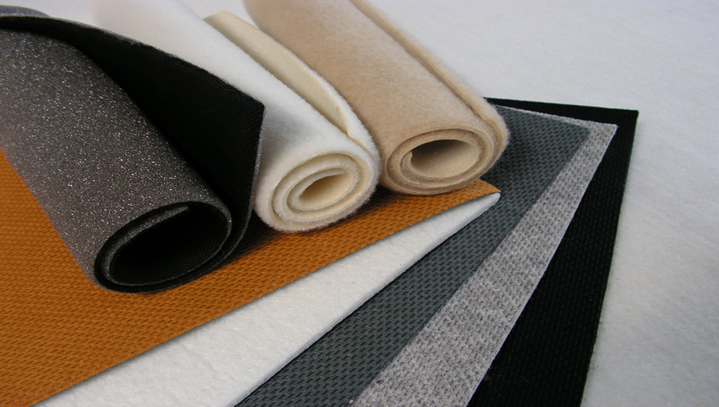

Acoperiş Branţ - Netermoformabil
SIDALK
SIDMUR
SIDMER I

Textile neţesute din fibre poliesterice, cu folie de aluminiu, latexate.
Masă:
600 ± 60 g/mp;
Lăţime:
150 ± 1 cm;
Aplicaţii:
Industria de încălţăminte - Captuseală încălţăminte, acoperiş de branţ cu rol de izolare termică.
SIDMUR
Textilã neţesutã din fibre sintetice tip poliester, plastifiată.
Masă:
750 ± 75 g/mp;
Lăţime:
150 ± 1 cm;
Aplicaţii:
Acoperiş de branţ, carâmb încălţăminte de protecţie.